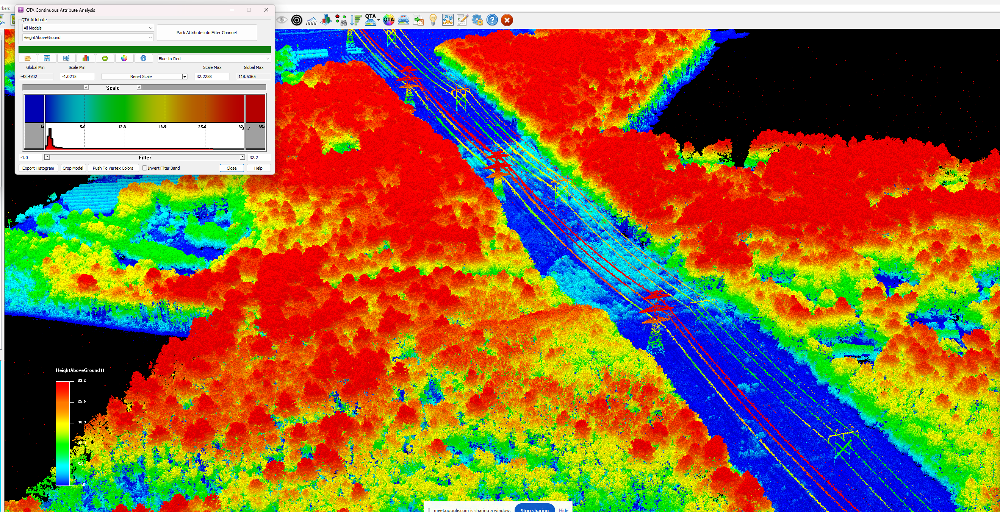
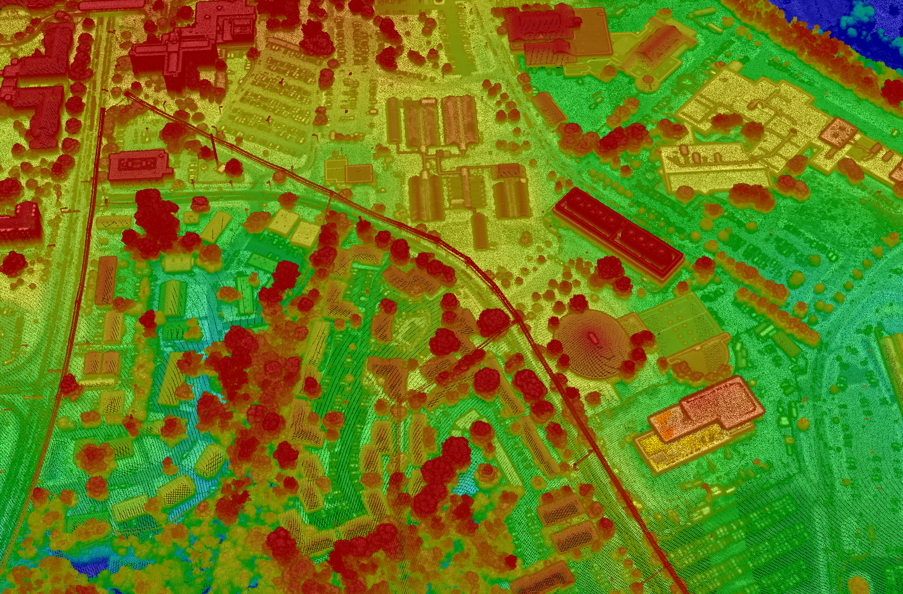

Large-scale corridor mapping for vegetation management, compliance, and reliability.

Power companies spend roughly $7 billion a year on vegetation management yet still face outages. Meeting code means mapping hundreds or thousands of miles of right-of-way at 5–10 cm accuracy — historically only possible from slow, low-flying platforms.
250+ miles of ROW at 5–10 cm vertical accuracy and 30–100+ points per square meter — without the cost of low, slow flying.
Engineered scanning follows winding ROWs and captures bypass substations without the aircraft constantly changing course.
Sequoia gathers 100+ ppsm from 18,000 ft at 350–450 kts, imaging a multi-km-wide strip per line.
Densities high enough to identify dead trees and clearance violations along the entire network.
A foremost partner of ours flies the collection on a modified Gulfstream G-IV, covering thousands of miles of ROW in days or hours. Aethon — a leader in aerial lidar for utility vegetation and engineering — analyzes the data to verify asset location, assess clearances, and eliminate blind spots.
Long-standoff, wide-area collection at up to 900 km² per hour from the flight levels.

Book a call to scope your project, or request representative point clouds for review.